Welcome to the Electronic Coloring Book project page.
The name is obviously a wordplay with Electronic Codebook, the simplest but also the most insecure chaining mode of operations to be used with a block cipher.
From Wikipedia:
The disadvantage of this method is that identical plaintext blocks are encrypted into identical ciphertext blocks; thus, it does not hide data patterns well. In some senses, it doesn't provide serious message confidentiality, and it is not recommended for use in cryptographic protocols at all. A striking example of the degree to which ECB can leave plaintext data patterns in the ciphertext can be seen when ECB mode is used to encrypt a bitmap image which uses large areas of uniform color. While the color of each individual pixel is encrypted, the overall image may still be discerned as the pattern of identically colored pixels in the original remains in the encrypted version.
This is typically illustrated with our favorite mascot:

Yes we can see it despite it's encrypted, but it's neither that obvious nor visually satisfying, for several reasons we'll explain. We can do better! And that's the goal of this little project.
Why ECB forensics isn't that easy?
Those ECB exemplary images are made artificially: the author knows the original file format (width, height, pixel encoding) and typically overwrites the encrypted header with the original one.
But when a file is encrypted and you don't know anything about it, it's not that simple.
One example is the 300 points challenge of the 2014 Nuit du Hack CTF Quals called The Another One. All you get is an encrypted BMP (as you can guess from the file extension).
It appears quickly that there are recurring encrypted blocks but practical problems are to recover the unknown parameters:
- width and height of the image
- pixel encoding. Here it's a BMP but BMP can encode each pixel in 1 bit, 2 bits, 4 bits, 8 bits, 16 bits, 24 bits or 32 bits so that doesn't really help.
- layout. Here it's a BMP so starting from bottom left to top right, line by line.
Pixel encoding, width and height link back to the total encrypted file size:
header + width * height * bytes_per_pixel + padding = filesize
I solved manually that challenge during the CTF but it's the trigger that pushed me to write this tool, to automate that painful process, and get nicer results!
Here is another example we'll walk through. For the record the binary blob was created from some ppm (as we need a non-compressed bitmap to start with) as:
openssl enc -e -aes-128-ecb -in test.ppm -out test.bin -k toto -nosalt
test.bin is available here
At first we'll use a square ratio and color each byte.
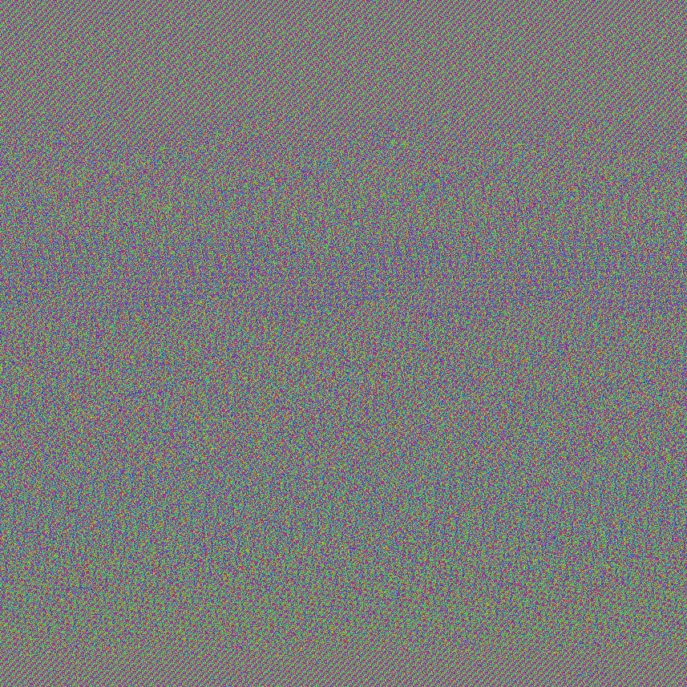
Nothing really recognizable, isn't it?
For the record, this image was produced with our tool, asking for a raw rendering and square ratio:
ElectronicColoringBook.py test.bin --raw --ratio=1:1
But we'll see our tool can do much better!
ElectronicColoringBook.py: a real example
ElectronicColoringBook.py is a Python script implementing a number of options we'll discover through the analysis of the test.bin file we generated above.
The main idea is to paint over recurring ECB blocks to reveal more easily, and more nicely, the structure of an ECB-encrypted file.
It does so by first computing an histogram of recurring blocks, then paint the most recurring blocks according to a color map. It also tries to guess the right ratio with some stupid hand-made kind of auto-correlation.
The color map is the following:
- The most recurring block is painted in white
- Then the next top ones are painted with some random saturated color, to make them easy to see
- All remaining blocks will be painted in black, because it's nicer than noise!
By default, the tool assumes:
- a blocksize of 16 bytes, which is the blocksize of AES
- an unknown ratio, to be guessed
- one byte per pixel
- 16 colors will be used: the most widespread block in white, the next 14 randomly, and the others in black.
Let's see:
ElectronicColoringBook.py test.bin
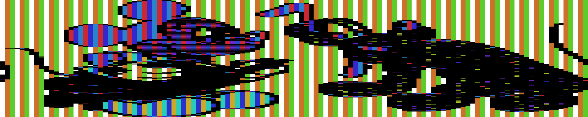
Already better!
Image is too wide but, given the pixel width, the ratio was correctly recovered and the lines properly wrapped. So we need to adjust the pixel width to compress horizontally the image:
ElectronicColoringBook.py test.bin --pixelwidth=3
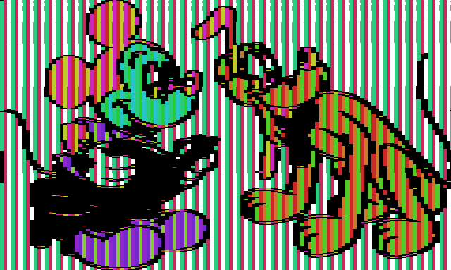
Remember intermediate colors are picked-up randomly so at each attempt it changes.
Now that the ratio and pixel width are correct we can observe vertical stripes. That happens when you can't have an exact number of pixels in each block and that's exactly the case here: we guessed each pixel requires 3 bytes and the blocksize is 16 so if pixels of the same color are side by side we get e.g. assuming pixels of color #AABBCC three types of block content, each of them encrypted to some gibberish:
AABBCCAABBCCAABBCCAABBCCAABBCCAA -> 81E49040C91E64A8F2EB52EB313EADF4
BBCCAABBCCAABBCCAABBCCAABBCCAABB -> 769B3981E49040C9164A83B6CBFB12BF
CCAABBCCAABBCCAABBCCAABBCCAABBCC -> 12B4502017A19C0EB313EADF47638FB2
AABBCCAABBCCAABBCCAABBCCAABBCCAA -> 81E49040C91E64A8F2EB52EB313EADF4
BBCCAABBCCAABBCCAABBCCAABBCCAABB -> 769B3981E49040C9164A83B6CBFB12BF
etc
The histogram given by our tool shows it clearly too:
e64572b589bb19c0eb313eadf4769b39 7528 #FF -> #FF #FF #FF
5302017a4208b19834ebbd6ad542e19f 7497 #53 -> #33 #CC #28
81e49040c91e64a83b46cbfb12bf12b4 7459 #9C -> #28 #60 #CC
21da534df36b7bb28134036d4a1e0b22 1100 #B1 -> #42 #28 #CC
f9d6713a5627d4b5d95416de941d6db8 1083 #99 -> #28 #6B #CC
a115eadf3b51b5c245dd4757fcf7c4d5 1014 #E3 -> #CC #28 #94
091dd89d9e3e07423c5ddcb2dfe0c912 577 #CB -> #A6 #28 #CC
851fecda89bdd3a133692d4c0f96a8a5 565 #D8 -> #CC #28 #BF
3f84477b3885b86cf2eb52dc0c762ea7 541 #02 -> #CC #2C #28
b0c826f278b5d27e7cc94373b457df44 226 #80 -> #28 #CC #CC
348b13815efe11c8b1ac83e86fd26d4f 225 #58 -> #28 #CC #31
e616ed83f167a272d3ceb5a3259f1114 205 #83 -> #28 #C0 #CC
184f88d431b6072f991a817d26ee8d2e 116 #7A -> #28 #CC #B4
b52adc1063add22fe924ef3b1f6455f7 109 #FE -> #CC #28 #2C
960cf60f2004894d29bb5bfeb1a743ae 100 #0D -> #CC #57 #28
******************************** 17617 #00 -> #00 #00 #00
See the number of occurrences? (2nd column) We can group them by three: 7528,7497,7459 ; 1100,1083,1014 ; etc.
So let's do it:
ElectronicColoringBook.py test.bin -p 3 --group=3
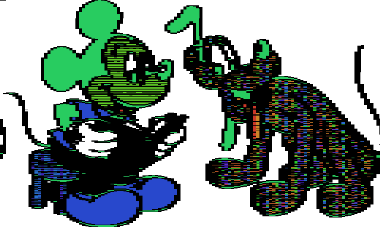
Still one more thing: Pluto's tail is wrapped, that's because before the real data there is the image header (here a PPM header) and in some case a salt if e.g. using openssl with a password. So we can apply a small offset to skip them. As we're working with blocks it can't be perfect. Here best is to skip one block, so 16 bytes:
ElectronicColoringBook.py test.bin -p 3 -g 3 --offset=1
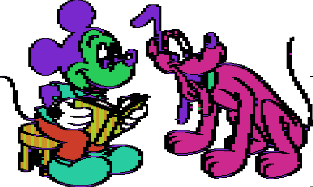
You can even go as far as telling which colors to use:
`ElectronicColoringBook.py test.bin -p 3 -g 3 -o 1 -P '#ffffff#fcb604#000000#f9fa00#fccdcc#fc1b23#a61604#a61604#fc8591#97fe37#000000'
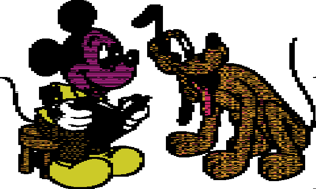
And voilà!
Now you understand better the name of our tool, Electronic Coloring Book :-)
ElectronicColoringBook.py: the options
We've seen a few options of ElectronicColoringBook.py in the example above but there are more of them:
--colors
-c COLORS, --colors=COLORS
Number of colors to use, default=16
Maximum number of colors to use is 256. Minimum is 2. Tune it for the best effect.
--palette
-P PALETTE, --palette=PALETTE
Provide list of colors to be used, as hex byte indexes
to a rainbow palette or as RGB palette
As seen in the example. Instead of specifying how many colors you want to use, you can tell which ones you want by providing a string made of #RRGGBB values or by providing a hex string where each byte encodes the color index, using the same internal saturated rainbow palette, where 00 is white and FF is black.
--blocksize
-b BLOCKSIZE, --blocksize=BLOCKSIZE
Blocksize to consider, in bytes, default=16
AES blocksize is 16, DES blocksize is 8, but e.g. I've also used the tool against lists of SHA-1 (20 bytes). If you doubt about which blocksize to use, try small values then larger ones to merge repreating vertical stripes. But don't forget to play also with groups other wise you'll lose in resolution.
ElectronicColoringBook.py test.bin --blocksize=3 -p 3 -o 10
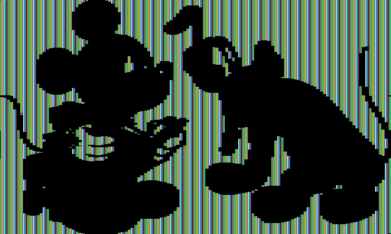
ElectronicColoringBook.py test.bin --blocksize=48 -p 3 -o 1
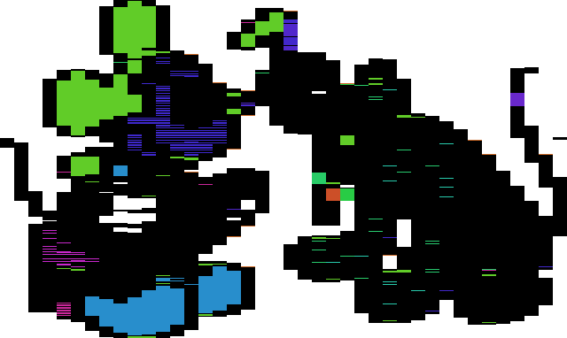
--groups
-g GROUPS, --groups=GROUPS
Groups of N blocks e.g. when blocksize is not multiple
of underlying data, default=1
As seen in the example
--ratio
-r RATIO, --ratio=RATIO
Ratio of output image
If you know it or want to tune it, feel free. Example: -r 4:3
--width
-x WIDTH, --width=WIDTH
Width of output image
If you know it or want to tune it, feel free.
--height
-y HEIGHT, --height=HEIGHT
Height of output image
If you know it or want to tune it, feel free.
Ratio, width and height are mutually exclusive as one is enough to force the final ratio given the file size.
--sampling
-s SAMPLING, --sampling=SAMPLING
Sampling when guessing image size. Smaller is slower
but more precise, default=1000
Sampling is used for the auto-correlation used while guessing the ratio. I never had to lower it but if you have difficulties recovering the ratio you may try lower sampling values.
--maxratio
-m MAXRATIO, --maxratio=MAXRATIO
Max ratio to test when guessing image size. E.g.
default=3 means testing ratios from 1:3 to 3:1
If you expect weird ratio you can play with maxratio... But remember adjusting pixelwidth will bring you closer to correct ratio too.
--offset
-o OFFSET, --offset=OFFSET
Offset to skip original header, in number of blocks
As seen in the example
--flip
-f, --flip Flip image top<>bottom
If you reveal a BMP, you'll have to flip it.
--pixelwidth
-p PIXELWIDTH, --pixelwidth=PIXELWIDTH
How many bytes per pixel in the original image
As seen in the example
--raw
-R, --raw Display raw image in 256 colors
No histogram here, no block, each byte is one pixel, using a smooth saturated rainbow palette.
This is what we used to display test.bin raw at first, but if we let it guessing the ratio, it gives the kind of typical ECB-encrypted images you've seen before:
ElectronicColoringBook.py test.bin --raw
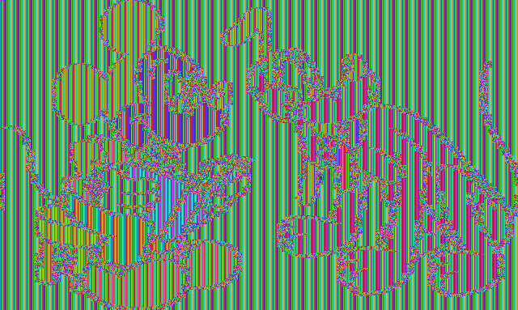
--save
-S, --save Save a copy of the produced image
By default the tool doesn't save produced images, but you can ask for it.
--output
-O OUTPUT, --output=OUTPUT
Change default output location prefix, e.g. -O
/tmp/mytest. Implies -S
Default storage location is to reuse input file location and name, and appending some parameters to its name, e.g.: /mypath/test.bin.b16_p3_c16_g3_x1600_y3200.png
You can change storage location, e.g. -O /tmp/mytest will generate /tmp/mytest.b16_p3_c16_g3_x1600_y3200.png
--dontshow
-D, --dontshow Don't display image
Useful for batching process or if you're not running under X
Back to that CTF challenge
The original file was crypted.bmp.
{kind=link}
It's pretty large and a largely uniform background as 225062 of the 270000 ECB blocks are identical, so it's relatively easy to revert it even manually.
E.g. if someone tries to display the raw content with a classical ratio of 4:3 he'll get something similar to (but with even less clear colors as he won't get them saturated):
ElectronicColoringBook.py crypted.bmp --raw --ratio=4:3
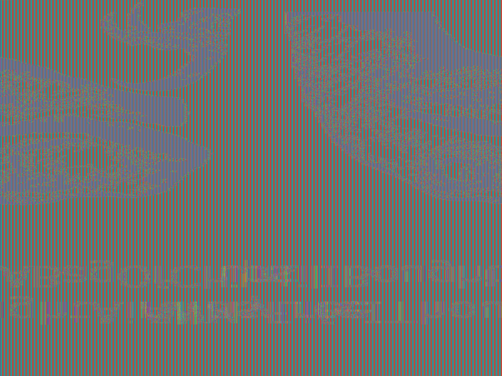
And here is what you get with ElectronicColoringBook.py and the right options:
ElectronicColoringBook.py crypted.bmp -c 3 -f -p 4
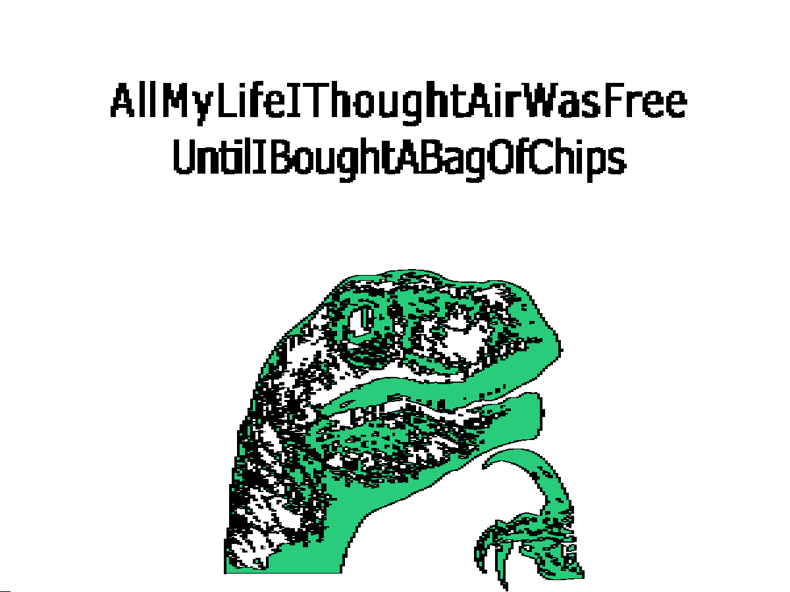
Wrong ratio?
In rare cases, ratio is almost guessed but not entirely correct. This happens e.g. when width is not an entire multiple of blocksize. Here is a BMP encrypted: test2.bin
ElectronicColoringBook.py test2.bin -m 4 --raw
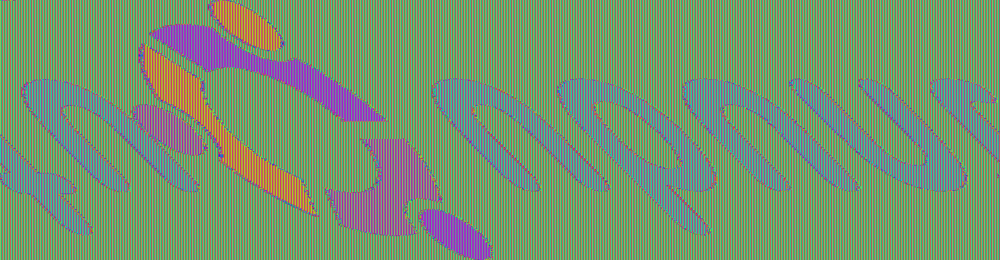
ElectronicColoringBook.py test2.bin -p 4 -f
Ratio is almost correct. Tool tells us the dimensions are 1500x391 Let's tune them slightly:
ElectronicColoringBook.py test2.bin -p 4 -f -x 1501 -o 5
And indeed 1501 is not a multiple of 16.
Not only ECB: XOR
Actually the tool can be useful in some other cases, e.g. for XORed files. Let's take our original example, this time XORed with a key of 5 chars instead of AES-encrypted: test3.bin
ElectronicColoringBook.py test3.bin --raw
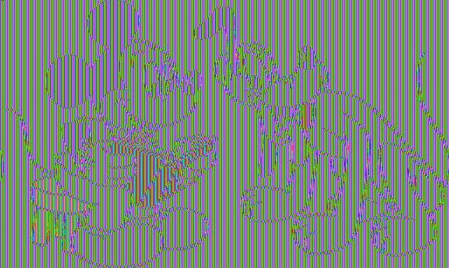
Blocksize=5 as XOR key is 5-byte long, pixelwidth is 3 bytes so we'll have to group them by 3 as 3 and 5 are coprimes, and finally a little offset to get rid of the header:
ElectronicColoringBook.py test3.bin -b 5 -g 3 -p 3 -o 3
And if we apply the same palette manually as we did on the ECB file:
ElectronicColoringBook.py test3.bin -b 5 -g 3 -p 3 -o 3 -P '#ffffff#fcb604#000000#f9fa00#fccdcc#fc1b23#a61604#a61604#fc8591#97fe37#000000'
Not only ECB: anything
Actually we can use the tool to colorize whatever we want and reveal some structures. E.g. applied on /bin/ls on an amd64 arch, this gives:
ElectronicColoringBook.py /bin/ls -b1 -m2
00 28929 #FF -> #FF #FF #FF
ff 5648 #1F -> #CC #9C #28
48 3727 #EB -> #CC #28 #75
20 3566 #C7 -> #97 #28 #CC
89 2258 #04 -> #CC #34 #28
0f 2127 #D3 -> #C5 #28 #CC
41 1847 #F3 -> #CC #28 #57
8b 1560 #AD -> #33 #28 #CC
24 1356 #05 -> #CC #38 #28
40 1288 #F6 -> #CC #28 #4B
44 1261 #CB -> #A6 #28 #CC
83 1224 #9B -> #28 #63 #CC
74 1223 #B5 -> #51 #28 #CC
01 1208 #6A -> #28 #CC #77
4c 1187 #C7 -> #97 #28 #CC
** 51583 #00 -> #00 #00 #00
Trying to guess ratio between 1:2 and 2:1 ...
Width: from 165 to 662
Sampling: 1000
Progress: 200 300 400 500 600
Size: (384, 286)
We get a byte histogram, and a graphical representation:
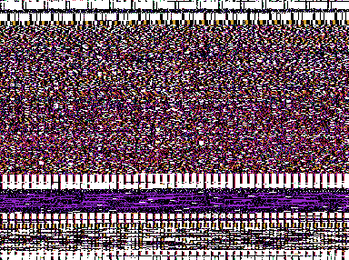
While applied on /bin/ls on an ARM arch, we can use a blocksize of 4:
ElectronicColoringBook.py /bin/ls -b4 -m2
00000000 681 #00 -> #FF #FF #FF
20202020 428 #A9 -> #28 #2D #CC
1eff2fe1 358 #8F -> #28 #92 #CC
000050e3 221 #D8 -> #CC #28 #BF
58ab0000 217 #59 -> #28 #CC #35
000053e3 201 #E4 -> #CC #28 #90
0400a0e1 120 #42 -> #74 #CC #28
2c990000 113 #D5 -> #CC #28 #CA
00c68fe2 112 #C7 -> #97 #28 #CC
12000000 112 #26 -> #CC #B7 #28
1dca8ce2 112 #8C -> #28 #9D #CC
f8c90000 100 #2E -> #C1 #CC #28
0000a0e3 98 #0B -> #CC #4F #28
0030a0e3 98 #82 -> #28 #C4 #CC
0700a0e1 81 #2C -> #C9 #CC #28
******** 21037 #FF -> #00 #00 #00
Trying to guess ratio between 1:2 and 2:1 ...
Width: from 155 to 620
Sampling: 1000
Progress: 200 300 400 500 600
Size: (240, 401)
This gives a nice overview of the top most used ARM instructions as we can recognize in the histogram:
e12fff1e bx lr
e3500000 cmp r0, #0
0000ab58 many pointers to loc_AB58 in big jump table?
e3530000 cmp r3, #0
e1a00004 mov r0, r4
etc
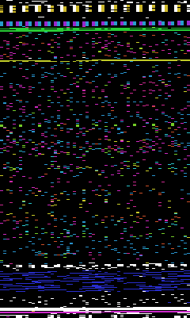
FAQ
Why not using Lena image as everybody else?
Yeah I would have preferred Lena too, but come on, it's coloring book, not Playboy!
More seriously, ElectronicColoringBook works only on large areas of (strictly) uniform color, which is rarely the case in photography (no, that pink wasn't uniform enough).
And to make it clear, it won't work on jpeg, png or other compressed or vectorized formats either.
So maybe you could show us the original ECB mascot?
The problem is that I can't find the original encrypted version of Tux used to generate the ECB-encrypted mascot you can find everywhere else, neither the original non-encrypted version.
is a jpeg, scaled down version so it's impossible to work from that one.
Sorry. See also below, the efforts of Filippo to contact the original author.
Related (art)work
Filippo & The ECB Penguin
Filippo (probably better known for his Heartbleed test) wrote a post about the ECB Penguin with the goal to make better-looking versions.
The trick was to work from a very large image (about 2500 x 3000) so the relative loss of precision due to the blocksize decreases significantly and if you look to the picture scaled down, the local noise tends to be smoothed away.
But if look at the image closer you'll see the usual random colors due to ECB and on the scaled down version, colors tend to be averaged to some grayish faded colors.

GynCryption
GynCryption is a variant of AngeCryption suggested by Gynvael Coldwind, using ECB and brute-forcing a key such that the encrypted file header becomes a valid header pointing to another part of the file.
So there the resulting image is radically different.
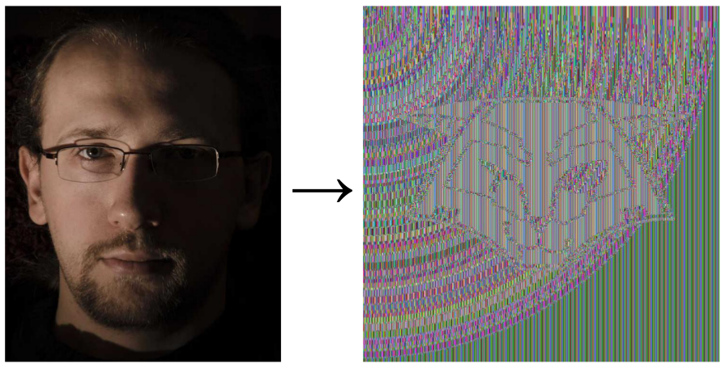
Quite funny trick!
Check Ange's presentations if you don't know Angecryption yet.
About the author
This tool has been written by Philippe Teuwen.
Don't hesitate to contact me for any suggestion, remark or alternative usages.
You can also use the issue tracker or just fork and propose pull requests on Github.